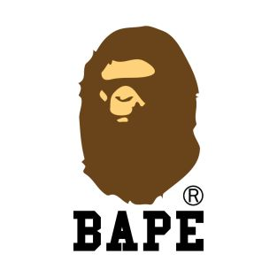

Introductie
klik hier voor naar de store te gaan
A Bathing Ape (of Bape) is een Japans kledingbedrijf opgericht door Nigo in 1993. Het bedrijf is gespecialiseerd in street-wear en zijn collectie wordt verkocht door verschillende winkels in Japan, zoals: Bape, Bape Store, Foot Soldier en de Bape Exclusive Stores (gelegen in Aoyama, Tokio). Het bedrijf heeft ook Bape Cuts-kapsalon, Bape-café en galerie Bape Sounds records. Er zijn ook winkels in Hongkong, Londen, New York, Taipei, Los Angeles en Singapore. Nigo startte ook verschillende vrouwenlijnen, als Apee, en Bapy and couture.
Info
- prijzen tussen 10-1000 euro
- oprichter Nigo
- Hoofdkantoor in Tokio
Locaties?
- Japan
- London
- Paris